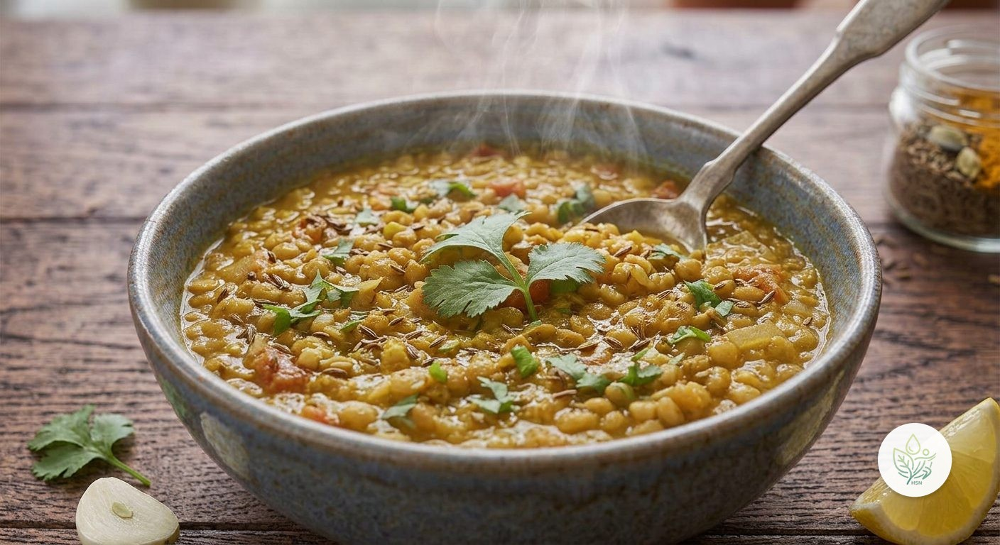

Dal de Lentejas
AEl curry indio de lentejas de toda la vida: jengibre, cúrcuma, comino y curry en polvo, sin leche de coco para mantener la grasa saturada al mínimo. Más de 55 g de proteína vegetal en la olla completa.
Las especias son las protagonistas: la cúrcuma y la pimienta que suele acompañarla en otros platos, el jengibre y el comino aportan compuestos antiinflamatorios además de todo el sabor característico del dal. Al prescindir de la leche de coco —habitual en esta receta pero muy rica en grasa saturada—, el plato queda con menos de 3 g de grasa saturada en toda la olla, sin perder cremosidad gracias a cómo las lentejas se deshacen ligeramente durante la cocción.
Ingredientes (toca el nombre para ver su ficha)
- 200 g
- 80 g
- 8 g
- 10 g
- 3 g
- 2 g
- 5 g
- 150 g
- 15 g
- 500 g
- 5 g
Elaboración
- Pica la cebolla, el ajo y el jengibre finamente.
- Sofríe la cebolla, el ajo, el jengibre, la cúrcuma, el comino y el curry en polvo en una olla con el AOVE a fuego medio, hasta que la cebolla esté blanda (5 minutos).
- Añade el tomate troceado y cocina 3-4 minutos más.
- Incorpora las lentejas y el caldo de verduras.
- Deja cocer a fuego medio-bajo, sin tapar, 30-35 minutos, removiendo de vez en cuando, hasta que las lentejas estén tiernas y la salsa haya espesado.
- Sirve caliente con cilantro fresco picado por encima.
Información nutricional (receta completa, 4 raciones)
De las grasas, 2.8 g son saturadas · de los carbohidratos, 14.4 g son azúcares · sodio: 172.4 mg
Preguntas frecuentes
¿Cuántas calorías tiene la receta de Dal de Lentejas?
Esta receta tiene 984.8 kcal en total (4 raciones).
¿Es una receta vegana?
Sí, todos los ingredientes son de origen vegetal.
¿Es apta sin gluten?
Sí, ningún ingrediente contiene gluten de forma natural.
¿Se puede congelar?
Sí, se congela muy bien hasta 3 meses en porciones individuales.